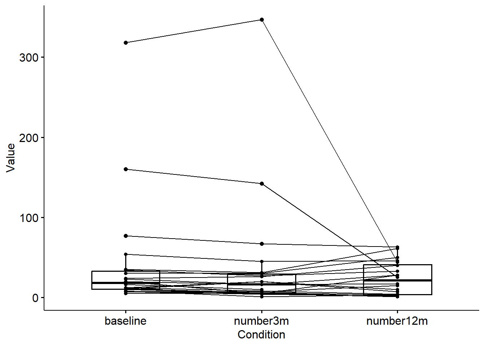
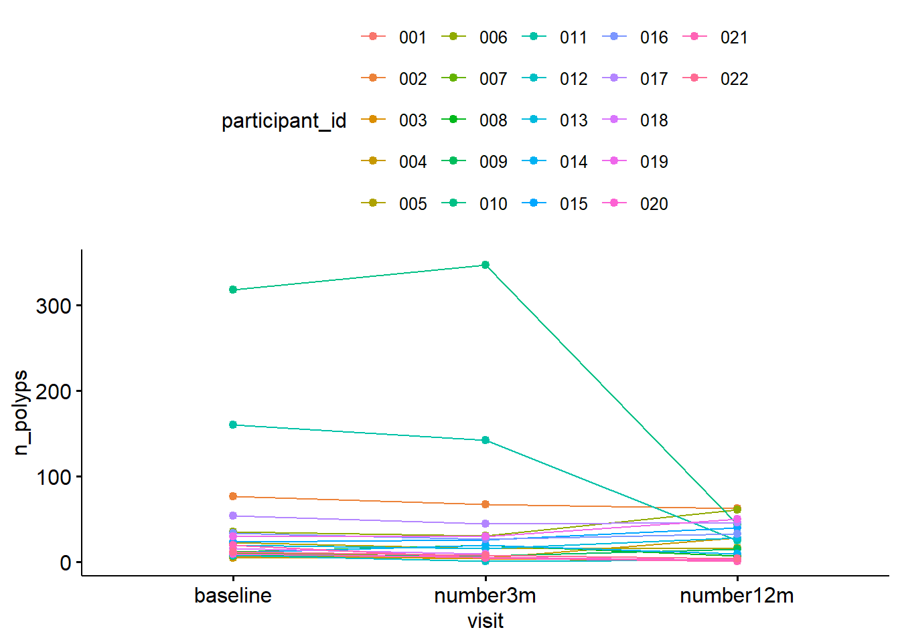
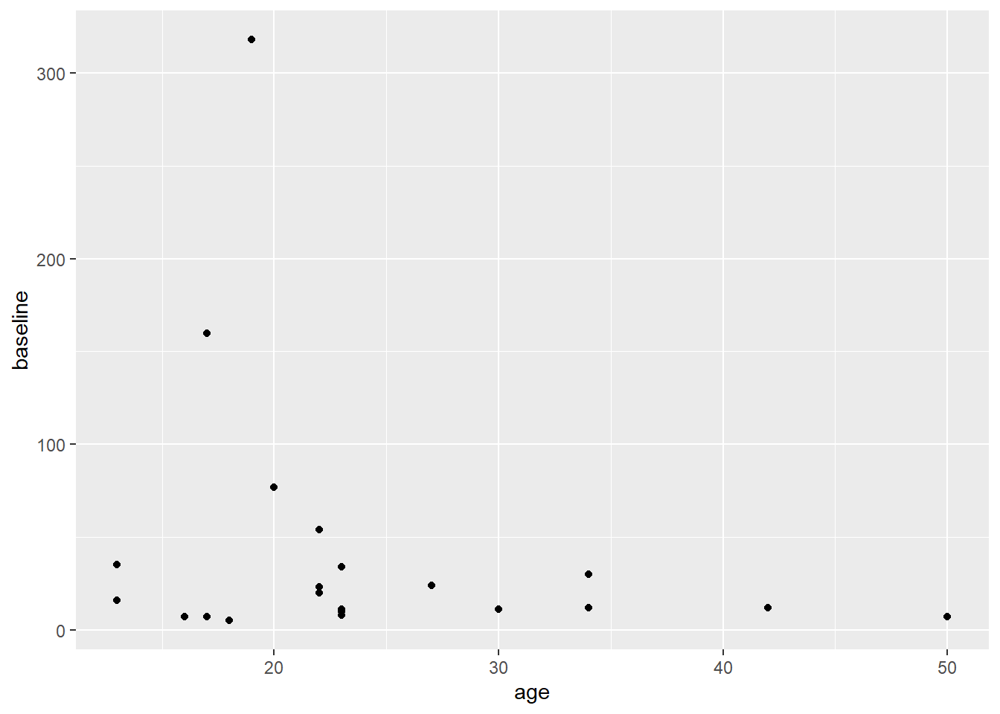
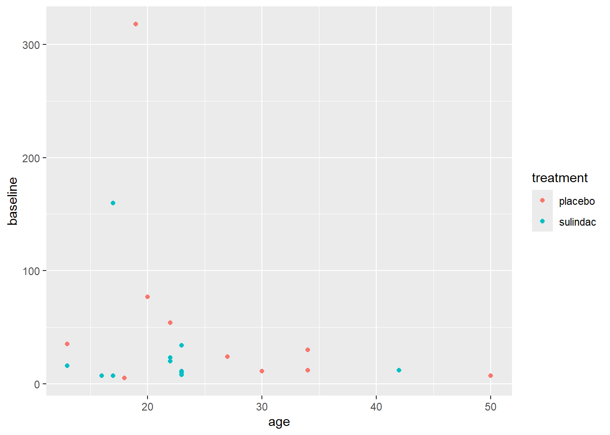
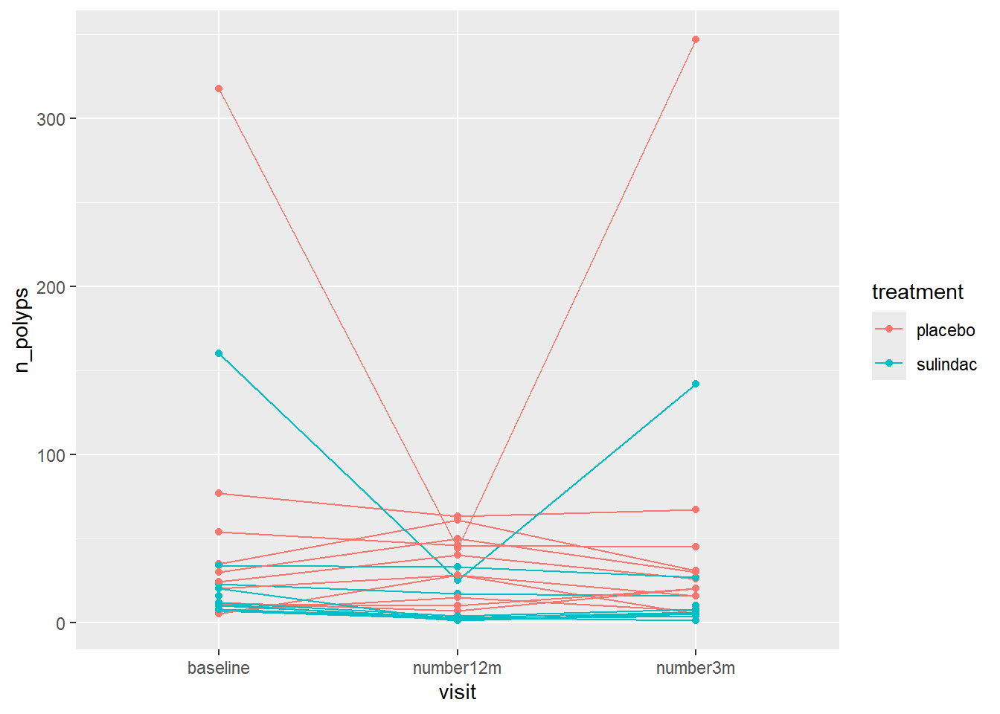
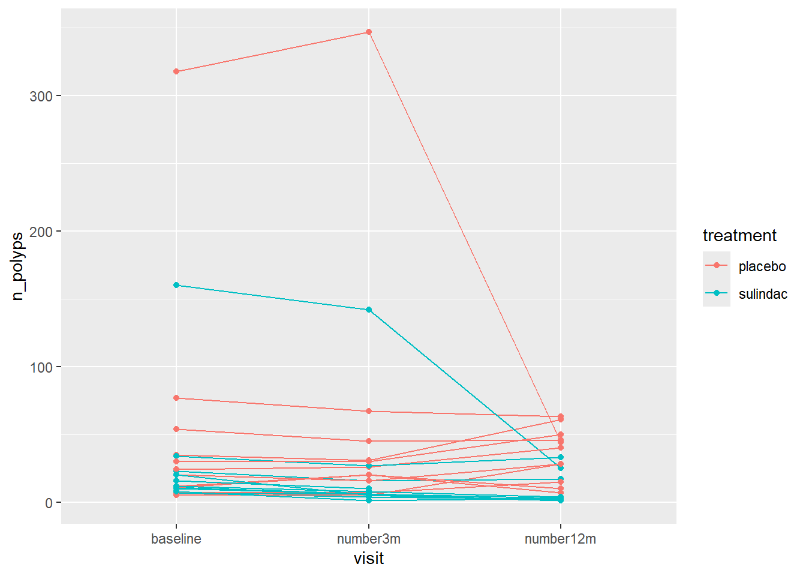
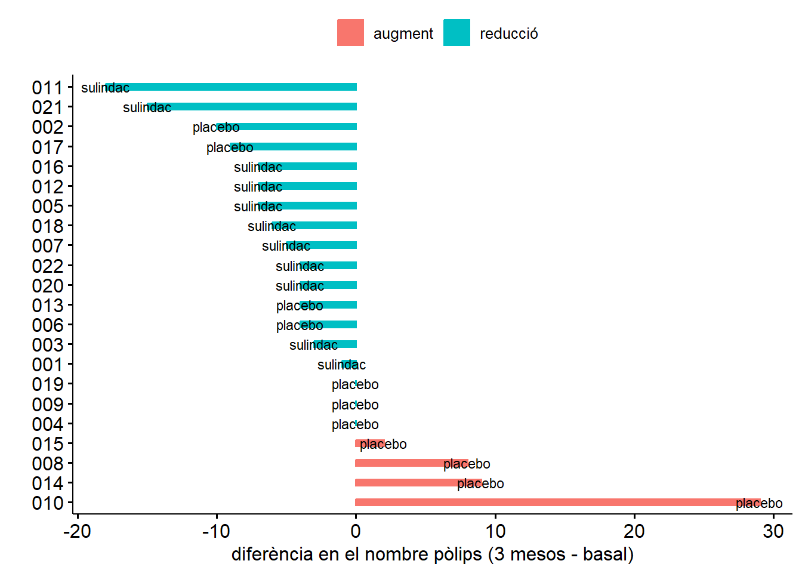

Sessió 4 Visualització avançada i comunicació de resultats
Objectius de la sessió
Explorar i visualitzar dades aparellades o longitudinals
Crear gràfics originals per representar dades diverses
Explorar i visualitzar la relació multivariant
Crear informes d’anàlisis estadístiques en format .html o .pdf
4.1 Representació de dades aparellades o longitudinals
Les dades aparellades o longitudinals són dissenys experimentals freqüents en medicina ja que permeten fer un seguiment del pacient i veure la seva evolució. La visualització i tractament d’aquestes dades però es mareix una atenció especial, ja que és molt important tenir clar que no es tracta de mesures totalment independents entre elles, sinó que provenen d’un mateix individu.
La visualització d’aquesta tipologia de dades és mitjançant un gràfic de línies. Per exemplificar-ho utilitzarem el conjunt de dades polyps de medicaldata.
Primer carreguem el paquet
Després posem a punt el data frame per tenir una única columna amb el nombre de pòlips registrats a cada visita:
polyps_long <- pivot_longer(polyps,
cols = c(baseline, number3m, number12m),
names_to = "visit",
values_to = "n_polyps")
head(polyps_long)## # A tibble: 6 × 6
## participant_id sex age treatment visit n_polyps
## <chr> <fct> <dbl> <fct> <chr> <dbl>
## 1 001 female 17 sulindac baseline 7
## 2 001 female 17 sulindac number3m 6
## 3 001 female 17 sulindac number12m NA
## 4 002 female 20 placebo baseline 77
## 5 002 female 20 placebo number3m 67
## 6 002 female 20 placebo number12m 63Visualitzem el nombre de pòlips al llarg del temps en cada individu. Les funcions que permeten visualitzar dades aparellades o longitudinals de ggpubr són ggpaired i ggline:
## Warning: Removed 2 rows containing non-finite outside the scale range
## (`stat_boxplot()`).## Warning: Removed 2 rows containing missing values or values outside the
## scale range (`geom_line()`).## Warning: Removed 2 rows containing missing values or values outside the
## scale range (`geom_point()`).
ggline(data = polyps_long, x = "visit", y = "n_polyps",
id = "participant_id", color = "participant_id")## Warning: Removed 2 rows containing missing values or values outside the
## scale range (`geom_line()`).
## Removed 2 rows containing missing values or values outside the
## scale range (`geom_point()`).
Amb aquest gràfic observem la tendència de cada individu, però com podem saber si el tractament ha tingut efecte?
Per veure si el nombre de pòlips canvia al llarg del temps de mateixa manera en individus tractats dels no tractats, podem colorejar les observacions segons el tractament:
ggpaired(
polyps_long,
x = "visit",
y = "n_polyps",
id = "participant_id",
color = "treatment",
line.color = "treatment",
width = 0 # fixa l'amplada de les caixes
) Amb l’argument
Amb l’argument width = 0 forcem que les caixes no apareguin al gràfic, però tot i així no és un gràfic ideal. Les funcions de gràfics del paquet ggpubr són molt útils, però a vegades limitades. Una alternativa que permet visualitzar dades longitudianls és a partir del paquet ggplot2.
4.2 El món ggplot2
El paquet ggpubr que hem estat fent servir fins ara crida (utilitza) moltes funcions d’aquest altre paquet anomenta ggplot2, que és molt més extens (però alhora una mica més complex de sintaxi). Tot i això, arribats a aquest punt, crec conveninet presentar-vos aquesta llibreria ja que té un gran potencial.
Primer cal instal·lar i carregar el paquet:
La sintaxi de les funcions ggplot2 és la següent:
ggplot(data = df, mapping = aes(x, y, other aesthetics)) +
geom_nomgrafic()La base del gràfic es defineix dins de la funció ggplot():
- data ha de ser un data frame
mapping = aes()totes les variables incloses dins deaes()es tindran en compte per generar el gràfic: la variable que s’ha de graficar a l’eix horitzontal (x), la que s’ha de graficar a l’eix vertical (y), i la resta de variables que s’han de tenir en compte per algun aspecte estètic, com per exemple el color.
Un cop definida la base, cal indicar quin tipus de gràfic s’ha d’aplicar mitjançant + geom_nomgrafic()
Vegem un exemple a partir de les dades polyps amb les variable age i baseline que respongui a la pregunta:
Creem la base del gràfic amb el data frame polyps, la variable age com a variable independent (x) i la variable baseline com a dependent (y).
 Veuràs que el codi anterior només crea la base del gràfic i els eixos. Per afegir les observacions cal indicar quin tipus de gràfic volem visualitzar. En aquest cas un gràfic de punts, per tant:
Veuràs que el codi anterior només crea la base del gràfic i els eixos. Per afegir les observacions cal indicar quin tipus de gràfic volem visualitzar. En aquest cas un gràfic de punts, per tant:
ggplot(data = polyps, # data frame
aes(age, baseline) # x i y
) +
geom_point() # afegeix les observacions en forma de punts
En el cas que es volguessin pintar les observacions en funció del tractament s’hauria d’escriure dins de aes(..., color = tretament)
ggplot(data = polyps, # data frame
aes(age, baseline, # x i y
color = treatment)
) +
geom_point() # afegeix les observacions en forma de punts
Tornem a l’exemple longitudinal… Volem representar el nombre de pòlips de cada participant diferenciant els tractats dels no tractats. En aquest cas, necessitem definir dins deaes() les variables que volem que es tinguin en compte a l’estètica del gràficls: group = participant_id (les línies han d’unir les observacions de cada pacient); i color = treatment (tots els tractats han de ser d’un color i els placebo d’un altre). Per altra banda, el gràfic que ens interessa en aquest cas és un gràfic de línies, per tant, cridarem geom_line(). A més, volem que cada observació aparegui com un punt en el gràfic, per tant, afegim geom_point().
ggplot(
polyps_long, # data frame on hi ha les dades
aes(visit, n_polyps, # x i y
group = participant_id, # variable que defineix el grups/pacients
color = treatment) # variable que defineix el color
) +
geom_line() + # gràfic de línies
geom_point() # gràfic de punts
Compara aquest gràfic amb el generat mitjançant ggpubr…són iguals?El factor visit no té l’odre que ens agradaria, recordes com es pot canviar l’ordre dels nivells d’un factor?
Ara torna a exacutar el gràfic i veuràs que apareixen les visites ordenades:
ggplot(polyps_long,
aes(visit, n_polyps,
group = participant_id,
color = treatment)
) +
geom_line() +
geom_point()## Warning: Removed 2 rows containing missing values or values outside the
## scale range (`geom_line()`).## Warning: Removed 2 rows containing missing values or values outside the
## scale range (`geom_point()`).
4.3 Altres representacions originals
A vegades ens farà falta ser creatius i crear gràfics que surten una mica d’aquest marc que acabem d’explicar. És per això que us animo a explorar alternatives per representar algunes dades.
ggdotchart(data = polyps_long, x = "participant_id", y = "n_polyps",
color = "visit",
shape = "treatment",
group = "treatment",
rotate = T)
polyps$dif <- polyps$number3m - polyps$baseline
polyps$dif_col <- ifelse(polyps$dif > 0, "augment", "reducció")
polyps$dif_col <- factor(polyps$dif_col)
ggbarplot(polyps, x = "participant_id", y = "dif",
# estètica de les barres
color = "dif_col",
fill = "dif_col",
width = 0.3,
# ordre de les barres
sort.val = "desc",
rotate = T,
# etiquetes (tractament)
label = polyps$treatment[order(polyps$dif, decreasing = TRUE)],
lab.size = 3,
lab.pos = "out",
lab.vjust = 0.5,
# eixos
xlab = "",
ylab = "diferència en el nombre pòlips (3 mesos - basal)",
legend.title = ""
)